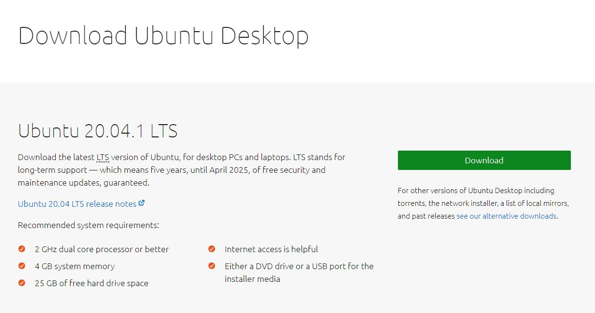
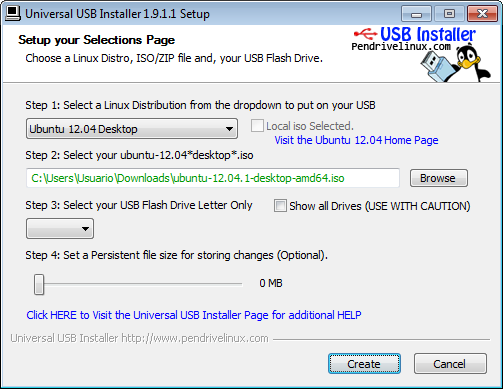

Instalacion de Linux
Para comenzar con al insalacion de linux primero necesitaremos descarga el instalador, desde el sitio web de Ubuntu.
⠀
⠀
Una vez descargado el archivo ISO, tenemos dos opciones: grabarlo e instalarlo desde un CD/DVD o hacerlo de un pendrive de por lo menos 2GB, por lo que necesitaremos un software que se ejecuta desde Windows y se llama Universal USB Installer que podemos descargar. Ejecutamos la aplicacion Universal USB Installer y seleccionamos en el Paso 1 la distribucion Ubuntu 12.04 Desktop, en el Paso 2 elegimos la ubicación del archivo ISO que nos hemos bajado anteriormente y en el Paso 3 seleccionamos la letra de la unidad USB (IMPORTANTE: ¡¡SE BORRARÁN TODOS LOS DATOS!!) y pinchamos en “Create”:⠀
⠀
*Una vez este finalizado el proceso, extraemos de forma segura la unidad USB y apagamos el portátil. *Conectamos la USB al dispositivo y lo encendemos. *En cuanto aparezca el logotipo de Acer pulsamos F12 y cuando aparezca el menú de arranque elegimos la unidad USB. *La instalación de Linux comenzara automáticamente. *A continuación, seleccionamos el idioma Español o en su defecto, el que prefiramos para el sistema operativo y pulsamos sobre “Instalar”.⠀

⠀
Y ese seria todo el proceso para instalar Linux.